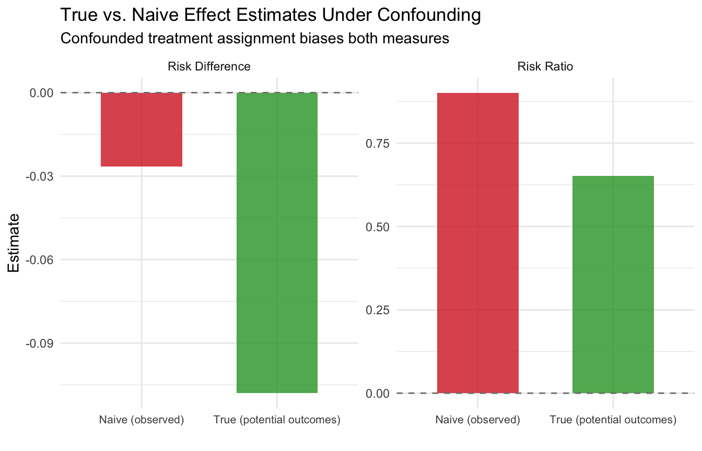

1 Foundations of Causal Thinking
Class materials
Slides: Module 1
Textbook Reading
Supplementary Reading
Pearl, J. and Mackenzie, D. (2018) The Book of Why: The New Science of Cause and Effect. Basic Books. Selected public health news articles (provided on the course site).
Topics Covered
- Association vs. Causation
- Introduction to Counterfactuals and Potential Outcomes
- Causal Estimands and Identification
- Measuring Effects for Binary Outcomes
- Critical reading exercise: analyzing causal claims in public health news
1.1 Association vs. Causation
Association refers to a statistical relationship where two variables move together, but one doesn’t necessarily cause the other. For instance, ice cream sales and drowning incidents both rise in the summer, not because one causes the other, but because they share a third factor: temperature. In contrast, causation implies a direct cause-and-effect relationship, where changing one variable leads to changes in another. Establishing causation requires rigorous methods, such as randomized controlled trials, to rule out confounding factors.
Simpson’s Paradox occurs when a trend appears in separate groups but reverses when the data are combined. This paradox is driven by confounding variables—unaccounted factors that influence both the treatment and the outcome. It illustrates how aggregated data can be misleading and emphasizes the importance of analyzing relationships within subgroups to avoid drawing incorrect conclusions.
To demonstrate this paradox, we simulate a study comparing two pneumonia treatments across 2,000 people. Treatment A was mostly given to mild cases, while Treatment B was given to severe cases. When data are analyzed without considering severity, Treatment A seems more effective. However, when stratified by severity, Treatment B consistently shows lower death rates in both mild and severe groups.
Checklist Item 1 — What is the causal question? Before looking at the data, let’s define the question: What is the effect of Treatment B (vs. Treatment A) on mortality risk in pneumonia patients? Treatment (\(W\)): Treatment B vs. Treatment A. Outcome (\(Y\)): Death (binary). Population: Pneumonia patients. Estimand: Risk difference.
1.1.1 Simulating Simpson’s Paradox
set.seed(123)
n <- 2050
severity <- rep(c("Mild", "Severe"), times = c(1450, 600))
treatment <- c(rep("Treatment A", 1400), rep("Treatment B", 50),
rep("Treatment A", 100), rep("Treatment B", 500))
outcome <- c(rbinom(1400, 1, 0.15), # Mild + A (15% death rate)
rbinom(50, 1, 0.10), # Mild + B (10% death rate)
rbinom(100, 1, 0.30), # Severe + A (30% death rate)
rbinom(500, 1, 0.20)) # Severe + B (20% death rate)
df <- data.frame(
Severity = severity,
Treatment = treatment,
Outcome = outcome
)
# Compute death rates by severity and treatment
death_counts <- tapply(df$Outcome, list(df$Severity, df$Treatment), sum)
table_counts <- table(df$Severity, df$Treatment)
death_rates <- round(death_counts / table_counts, 3)
overall_a <- sum(df$Outcome[df$Treatment == "Treatment A"]) / sum(df$Treatment == "Treatment A")
overall_b <- sum(df$Outcome[df$Treatment == "Treatment B"]) / sum(df$Treatment == "Treatment B")
print("Death rates by severity and treatment:")## [1] "Death rates by severity and treatment:"## Treatment A Treatment B
## Mild 0.136 0.120
## Severe 0.380 0.204## Overall death rate (Treatment A): 0.153## Overall death rate (Treatment B): 0.1961.1.2 Visualizing Simpson’s Paradox
The plots below mirror the side-by-side comparison from the slides: the left panel shows the aggregated (misleading) view, while the right panel stratifies by severity to reveal the truth.
# Compute stratified death rates
group_rates <- df %>%
group_by(Severity, Treatment) %>%
summarize(Death_rate = mean(Outcome), .groups = "drop")
# Build the two panels as separate data frames
overall_df <- data.frame(
Panel = "Aggregated (Misleading)",
Group = c("Treatment A", "Treatment B"),
Treatment = c("Treatment A", "Treatment B"),
Death_rate = c(overall_a, overall_b)
)
stratified_df <- group_rates %>%
mutate(
Panel = "Stratified by Severity (Truth)",
Group = paste(Severity, "-", Treatment)
)
# Combine
plot_df <- bind_rows(
overall_df %>% select(Panel, Group, Treatment, Death_rate),
stratified_df %>% select(Panel, Group, Treatment, Death_rate)
)
# Set factor order so panels and bars appear in the right sequence
plot_df$Panel <- factor(plot_df$Panel,
levels = c("Aggregated (Misleading)",
"Stratified by Severity (Truth)"))
plot_df$Group <- factor(plot_df$Group,
levels = c("Treatment A", "Treatment B",
"Mild - Treatment A", "Mild - Treatment B",
"Severe - Treatment A", "Severe - Treatment B"))
ggplot(plot_df, aes(x = Group, y = Death_rate, fill = Treatment)) +
geom_col(width = 0.65, alpha = 0.85) +
geom_text(aes(label = paste0(round(Death_rate * 100, 1), "%")),
vjust = -0.5, size = 3.5) +
facet_wrap(~ Panel, scales = "free_x") +
scale_fill_manual(values = c("Treatment A" = "#1F77B4",
"Treatment B" = "#D62728")) +
scale_y_continuous(labels = scales::percent_format(),
limits = c(0, max(plot_df$Death_rate) * 1.15)) +
labs(title = "Simpson's Paradox: Aggregated vs. Stratified Results",
y = "Death Rate", x = "") +
theme_minimal() +
theme(axis.text.x = element_text(size = 8, angle = 20, hjust = 1),
strip.text = element_text(face = "bold", size = 11))
Only after stratifying by the severity of the case are we able to observe that Treatment B is actually more effective than Treatment A for both mild and severe pneumonia cases. The confounding variable—severity—was distorting the overall comparison.
1.2 Why We Use Simulations
Throughout this course, we use simulations. Simulations are computer-generated datasets where we control the true data-generating process. In the real world, we never know the true causal effect. In a simulation, we do. This lets us:
- See both potential outcomes \(Y(0)\) and \(Y(1)\) for every person (impossible in reality)
- Compute the true causal effect and compare it to what an analyst would estimate from observed data
- Understand exactly when and why naive methods go wrong
Think of a simulation as a laboratory for causal reasoning: we build a miniature world, set the rules, and then test whether our statistical tools recover the truth. The code below builds that intuition step by step.
1.3 Introduction to Counterfactuals and Potential Outcomes
At the heart of causal inference lies a simple yet powerful idea: counterfactuals — what would have happened if something else had occurred. However, we can never observe both outcomes for the same person. This is known as the Fundamental Problem of Causal Inference. We only observe the outcome under the condition that actually occurred — everything else is unobserved, or counterfactual.
Building on the concept of counterfactuals, the Average Treatment Effect (ATE) provides a formal way to quantify the impact of a treatment or intervention across a population. Since we cannot observe both potential outcomes (treated and untreated) for the same individual, ATE instead compares the average outcome we would see if everyone received the treatment versus if no one did. Mathematically, it is the difference between the expected value of the potential outcome under treatment and the expected value under control. While individual causal effects remain unobservable, the ATE offers a population-level summary of the treatment’s impact — a cornerstone of policy evaluation, randomized experiments, and observational causal analysis.
1.3.1 Notation
Counterfactuals can be represented using potential outcomes notation:
- \(Y\) = the observed outcome
- \(Y(0)\) = the potential outcome under no treatment
- \(Y(1)\) = the potential outcome under treatment
- \(W\) = a binary variable that represents whether a unit was treated or not. If \(W = 1\), then the unit was treated. If \(W = 0\), then the unit was not treated.
Notice that the observed outcome can be expressed in terms of potential outcomes:
\[Y = W \cdot Y(1) + (1 - W) \cdot Y(0)\]
So \(Y = Y(1)\) if the unit was treated and \(Y = Y(0)\) if the unit was not treated. This equation is known as consistency.
1.3.2 The Potential Outcomes Table
Let’s make this concrete. We simulate 6 patients and — because this is a simulation — we get to see both potential outcomes for each person. This mirrors the HRT table from the slides.
set.seed(42)
# Six patients with known potential outcomes (headache intensity, 0-100)
po_table <- data.frame(
Patient = 1:6,
Y0 = c(75, 60, 80, 50, 70, 85), # outcome without aspirin
Y1 = c(25, 40, 55, 30, 50, 60) # outcome with aspirin
)
po_table$Causal_Effect <- po_table$Y1 - po_table$Y0
cat("=== God's-Eye View: Both Potential Outcomes ===\n\n")## === God's-Eye View: Both Potential Outcomes ===knitr::kable(po_table,
col.names = c("Patient", "Y(0)", "Y(1)", "Causal Effect"),
caption = "Complete potential outcomes table (only possible in a simulation)")| Patient | Y(0) | Y(1) | Causal Effect |
|---|---|---|---|
| 1 | 75 | 25 | -50 |
| 2 | 60 | 40 | -20 |
| 3 | 80 | 55 | -25 |
| 4 | 50 | 30 | -20 |
| 5 | 70 | 50 | -20 |
| 6 | 85 | 60 | -25 |
##
## True ATE: -26.66667Every patient benefits from aspirin (all causal effects are negative). The ATE tells us the average benefit. But in the real world, we cannot see both columns — each patient either takes aspirin or doesn’t.
1.3.3 What Happens When Treatment Is Assigned?
Now let’s assign treatment and see how the table changes. We mask the counterfactual outcome with “?” — this is the Fundamental Problem of Causal Inference in action.
# Assign treatment (not randomly — sicker patients more likely to get aspirin)
po_table$W <- c(1, 0, 1, 0, 1, 0) # patients 1, 3, 5 get aspirin
# What we actually observe
po_table$Y_obs <- ifelse(po_table$W == 1, po_table$Y1, po_table$Y0)
# Build the "observed" table with ?'s
obs_display <- data.frame(
Patient = po_table$Patient,
W = ifelse(po_table$W == 1, "Aspirin", "No aspirin"),
Y0_obs = ifelse(po_table$W == 0, po_table$Y0, "?"),
Y1_obs = ifelse(po_table$W == 1, po_table$Y1, "?"),
Y_observed = po_table$Y_obs
)
cat("=== What We Actually See ===\n\n")## === What We Actually See ===knitr::kable(obs_display,
col.names = c("Patient", "Treatment", "Y(0)", "Y(1)", "Observed Y"),
caption = "After treatment assignment: counterfactuals become '?'")| Patient | Treatment | Y(0) | Y(1) | Observed Y |
|---|---|---|---|---|
| 1 | Aspirin | ? | 25 | 25 |
| 2 | No aspirin | 60 | ? | 60 |
| 3 | Aspirin | ? | 55 | 55 |
| 4 | No aspirin | 50 | ? | 50 |
| 5 | Aspirin | ? | 50 | 50 |
| 6 | No aspirin | 85 | ? | 85 |
# Naive comparison
mean_treated <- mean(po_table$Y_obs[po_table$W == 1])
mean_control <- mean(po_table$Y_obs[po_table$W == 0])
cat("\nMean outcome (treated):", mean_treated, "\n")##
## Mean outcome (treated): 43.33333## Mean outcome (control): 65## Naive estimate (treated - control): -21.66667## True ATE: -26.66667##
## The naive estimate differs from the true ATE because treatment was## not randomly assigned — sicker patients received aspirin.Notice the gap: the naive comparison and the true ATE don’t match. This is because patients 1, 3, and 5 (who got aspirin) had higher baseline headache scores than patients 2, 4, and 6. The naive comparison confounds the drug’s effect with pre-existing differences between the groups — exactly the problem that motivates everything in this course.
1.3.4 Simulation: Seeing Confounding Bias in Action
The simulation below tests the effect of a treatment on 2,000 patients. The treatment was assigned to older people with higher levels of cholesterol. If we simply take the difference of the average outcome of the treated group and the average outcome of the control group, then our estimate of the average treatment effect will be biased because age and cholesterol levels are confounding the effect of the treatment. This is shown by how the true average treatment effect differs from the naive average treatment effect estimate.
set.seed(123)
n <- 2000
age <- rnorm(n, mean = 50, sd = 10)
bmi <- rnorm(n, mean = 25, sd = 4)
cholesterol <- rnorm(n, mean = 200, sd = 30)
# Treatment assignment: strong bias toward older, high-cholesterol people
treatment <- rbinom(n, 1, plogis(0.2 * age + 0.05 * cholesterol - 25))
# True untreated outcome
y_0 <- 140 - 1.5 * age + 0.3 * bmi + 0.5 * cholesterol + rnorm(n, sd = 5)
# True treated outcome: better, but depends on age & cholesterol
y_1 <- y_0 - (40 + 1.5 * age - 0.8 * cholesterol) + rnorm(n, sd = 2)
# Observed outcome
y <- ifelse(treatment == 1, y_1, y_0)
# True ATE: average of individual-level effects
true_ate <- mean(y_1 - y_0)
df_conf <- data.frame(age, bmi, cholesterol, treatment, y)
# Naive estimate: difference in means
naive_ate <- mean(df_conf$y[df_conf$treatment == 1]) - mean(df_conf$y[df_conf$treatment == 0])
cat("True ATE:", round(true_ate, 3), "\n")## True ATE: 44.567## Naive (unadjusted) ATE estimate: 49.021cat("\nThe naive estimate is biased because treatment was assigned based on age and cholesterol.\n")##
## The naive estimate is biased because treatment was assigned based on age and cholesterol.## We'll learn methods to close this gap starting in Week 2.1.4 Causal Estimands and Identification
Causal estimands are the quantities we aim to estimate to understand the effect of a treatment or intervention. The most common estimands include:
- Average Treatment Effect (ATE): Measures the average difference in outcomes if everyone received the treatment versus if no one did.
\[ATE = E[Y(1) - Y(0)]\]
- Average Treatment Effect on the Treated (ATT): Measures the effect of treatment for those who actually received the treatment.
\[ATT = E[Y(1) - Y(0) \mid W = 1]\]
- Conditional Average Treatment Effect (CATE): Measures the treatment effect for subgroups defined by observed characteristics (e.g., older vs. younger patients).
\[CATE = E[Y(1) - Y(0) \mid X = x]\]
Think of \(X = x\) where \(X\) is some form of age classification and \(x\) could be a value of the age classification, such as younger or older.
Identification is the process of linking a causal estimand (like ATE) to observable data. Without valid identification, any estimates we produce may be biased or incorrect. One major challenge in causal inference is that we can never observe both potential outcomes for the same person — only the outcome under the actual treatment they received. This is the Fundamental Problem of Causal Inference.
1.5 Measuring Effects for Binary Outcomes
Often in public health settings, we have to estimate the causal effect on a binary outcome such as survival. For example, if we are trying to measure the effect of a heart surgery on a patient’s survival status, we can say that the outcome \(Y = 1\) means that the patient died and \(Y = 0\) means that the patient survived. There are only two possible outcomes. In this case, we try to quantify or measure the causal effect using two main effect measures.
Risk Difference (additive scale):
\[Pr[Y(1) = 1] - Pr[Y(0) = 1]\]
For example, if we estimated the heart surgery to have a risk difference of \(-0.5\), then on average, the surgery reduced the probability of death by 0.5.
Risk Ratio (multiplicative scale):
\[\frac{Pr[Y(1) = 1]}{Pr[Y(0) = 1]}\]
For example, if the heart surgery was estimated to have a risk ratio of 0.5, then the risk of death under surgery is half compared to the risk of death under no surgery.
1.5.1 Simulation: Heart Surgery and Survival
Let’s put these measures to work. We simulate a study of 500 patients where we know the true potential outcomes for a heart surgery. Since this is a simulation, we can see both \(Y(1)\) and \(Y(0)\) for every patient — something we can never do in the real world. This lets us compute the true risk difference and risk ratio, and then see how the naive comparison (which ignores confounding) gets it wrong.
set.seed(123)
n <- 500
# Simulate covariates
age <- rnorm(n, 60, 12)
age <- pmax(25, pmin(90, age))
health_score <- rnorm(n, 60, 15)
health_score <- pmax(0, pmin(100, health_score))
# True potential outcome probabilities
# Higher age and lower health → higher risk of death
p0 <- plogis(-0.98 + 0.034 * age - 0.036 * health_score)
p1 <- plogis(-0.98 + 0.034 * age - 0.036 * health_score - 0.51) # surgery helps
# Generate BOTH potential outcomes (God's-eye view)
Y0 <- rbinom(n, 1, p0)
Y1 <- rbinom(n, 1, p1)
# True causal quantities (using potential outcomes directly)
true_rd <- mean(Y1) - mean(Y0)
true_rr <- mean(Y1) / mean(Y0)
cat("=== True Causal Effects (from potential outcomes) ===\n")## === True Causal Effects (from potential outcomes) ===## Pr[Y(1)=1] (risk under surgery): 0.202## Pr[Y(0)=1] (risk without surgery): 0.31## Risk Difference: -0.108## Risk Ratio: 0.652The surgery reduces the risk of death — the risk difference is negative and the risk ratio is below 1. But remember: in reality we never see both \(Y(1)\) and \(Y(0)\). Each patient walks only one path.
1.5.2 The Fundamental Problem in Action
Now let’s see what happens when treatment is not randomly assigned. Sicker patients (older, lower health scores) are more likely to receive the surgery — just as in the real world.
# Confounded treatment assignment: sicker patients get surgery
W_prob <- plogis(-1 + 0.03 * age - 0.03 * health_score)
W <- rbinom(n, 1, W_prob)
# Observed outcome: we only see Y(1) for treated, Y(0) for untreated
Y_obs <- ifelse(W == 1, Y1, Y0)
# Naive comparison: difference in observed means
naive_rd <- mean(Y_obs[W == 1]) - mean(Y_obs[W == 0])
naive_rr <- mean(Y_obs[W == 1]) / mean(Y_obs[W == 0])
cat("=== Naive Comparison (what we observe) ===\n")## === Naive Comparison (what we observe) ===## Death rate among treated: 0.243## Death rate among untreated: 0.269## Naive Risk Difference: -0.027## Naive Risk Ratio: 0.901## === Comparison ===## True Risk Difference: -0.108## Naive Risk Difference: -0.027## Bias: 0.081The naive comparison is biased — it may even reverse the sign of the effect, making it look like the surgery hurts when it actually helps. This is exactly the HRT story from the slides: healthier women chose HRT, so the naive comparison confounded the treatment effect with pre-existing health differences.
1.5.3 Visualizing the Bias
plot_df <- data.frame(
Measure = rep(c("Risk Difference", "Risk Ratio"), each = 2),
Type = rep(c("True (potential outcomes)", "Naive (observed)"), 2),
Value = c(true_rd, naive_rd, true_rr, naive_rr)
)
ggplot(plot_df, aes(x = Type, y = Value, fill = Type)) +
geom_col(width = 0.6, alpha = 0.8) +
facet_wrap(~ Measure, scales = "free_y") +
scale_fill_manual(values = c("True (potential outcomes)" = "#2CA02C",
"Naive (observed)" = "#D62728")) +
geom_hline(yintercept = 0, linetype = "dashed", color = "gray50") +
labs(title = "True vs. Naive Effect Estimates Under Confounding",
subtitle = "Confounded treatment assignment biases both measures",
y = "Estimate", x = "") +
theme_minimal() +
theme(legend.position = "none", axis.text.x = element_text(size = 8))
This is the core challenge of causal inference with binary outcomes: without a valid study design, our estimates of risk differences and risk ratios can be severely misleading. Starting in Week 2, we will learn how randomization solves this problem — and in later weeks, we will learn estimation strategies for settings where randomization is not possible.
Next week: Randomized Controlled Trials — why randomization solves the confounding problem, and we add Checklist Items 2–3 to our toolkit.